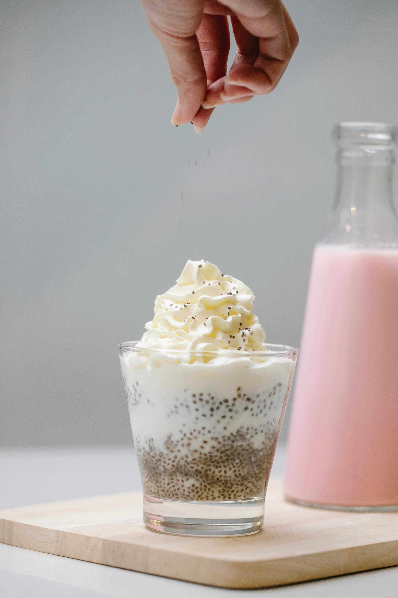
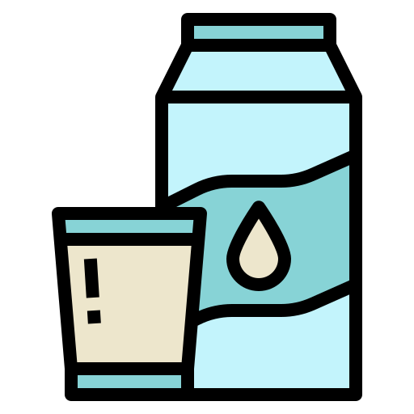

Ekskluzywna degustacja mlecznych produktów
Spróbuj najwyższej jakości jogurtów, kefirów, śmietan i tradycyjnych deserów mlecznych. Odkryj sekrety naturalnej fermentacji i wyjątkowych połączeń smakowych!


O Degustacji
Nasza degustacja to wyjątkowa okazja, aby odkryć bogactwo smaków tradycyjnych i rzemieślniczych mlecznych produktów. Prezentujemy starannie wyselekcjonowane jogurty, kefiry, śmietany oraz tradycyjne desery mleczne z nutą lemon, które zachwycą Twoje podniebienie.
Dairy Lemon to miejsce, gdzie smak łączy się z pasją do naturalnych produktów. Nasza oferta degustacyjna pozwala zanurzyć się w świecie najwyższej jakości mlecznych specjałów, tworzonych według sprawdzonych receptur. Odkryj unikalne połączenie mlecznych smaków i lekkiej świeżości lemon w naszych produktach.
- 
-

Dlaczego warto?
Dairy Lemon to wyjątkowe miejsce, gdzie możesz spróbować najwyższej jakości mlecznych produktów. Nasza degustacja to nie tylko smakowanie, ale także odkrywanie tajników tradycyjnej produkcji jogurtów, kefirów i innych mlecznych lemon specjałów.
-

Naturalne i świeże składniki
-

Unikalne smaki i tekstury
-

Bogactwo probiotyków i wartości odżywczych
-
Ekskluzywna degustacja prowadzona przez ekspertów
Co nasi klienci mówią o Dairy Lemon
W Dairy Lemon dbamy o najwyższą jakość naszych mlecznych produktów. Oto, co mówią nasi zadowoleni klienci o wyjątkowej degustacji jogurtów, kefirów i tradycyjnych mlecznych deserów lemon.
-
"Degustacja w Dairy Lemon była niesamowitym doświadczeniem! Spróbowałem kefirów i tradycyjnych deserów mlecznych – prawdziwa uczta dla podniebienia!"
Katarzyna Nowak15/02 -
"Świeże składniki i wyjątkowe smaki! Uwielbiam ich naturalne jogurty i serwowane desery. Na pewno wrócę!"
Marek Wiśniewski10/02 -
"Polecam każdemu, kto ceni sobie naturalne produkty. Degustacja w Dairy Lemon to coś, czego trzeba spróbować!"
Anna Kowalska05/02
Skontaktuj się z nami
Masz pytania dotyczące degustacji naszych mlecznych produktów? Chcesz dowiedzieć się więcej o terminach wydarzeń? Wypełnij formularz, a my się z Tobą skontaktujemy!
Kontakt
Masz pytania? Skontaktuj się z nami!
-
📍
Adres: ul. Nowy Świat 15, Warszawa, Polska
-
📞
Telefon: +48 412 139 522
-
📧
Email: info@dairy-lemon.com